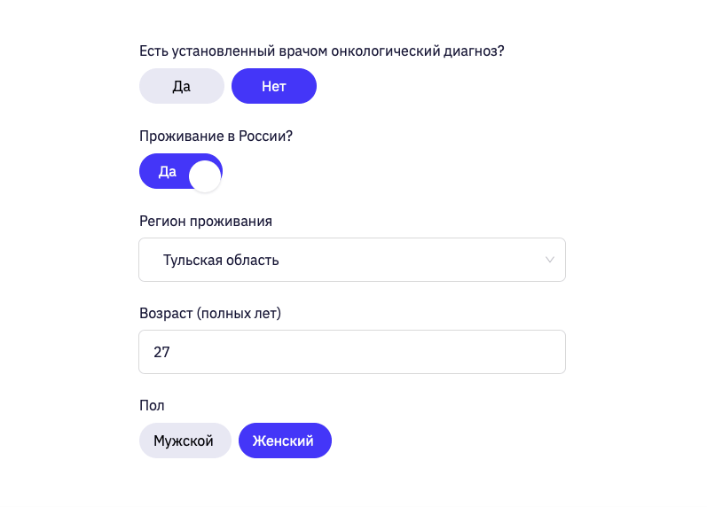
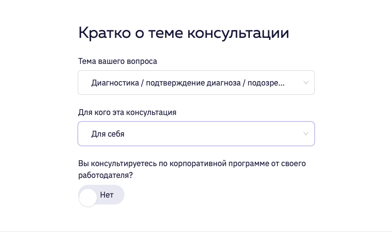
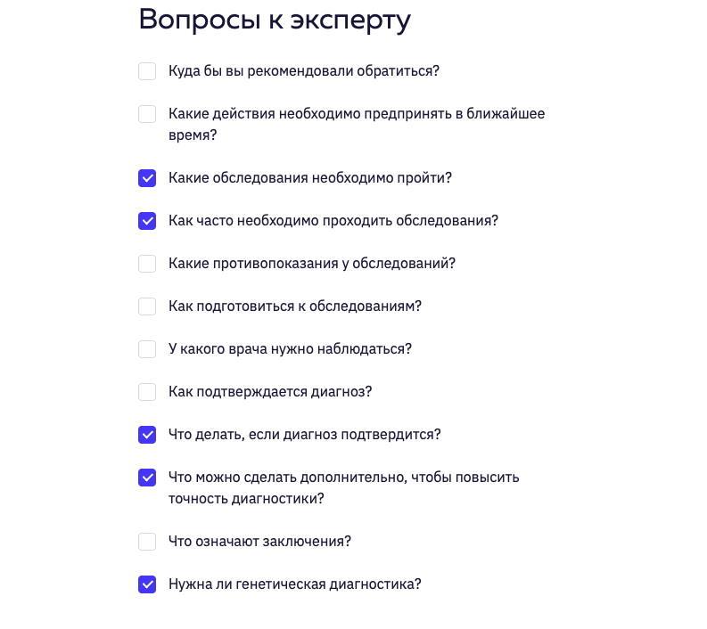
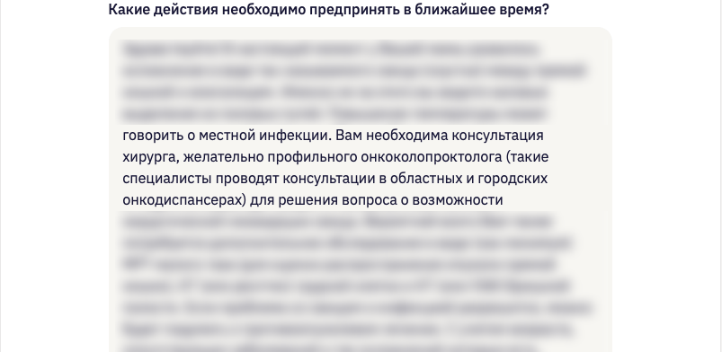
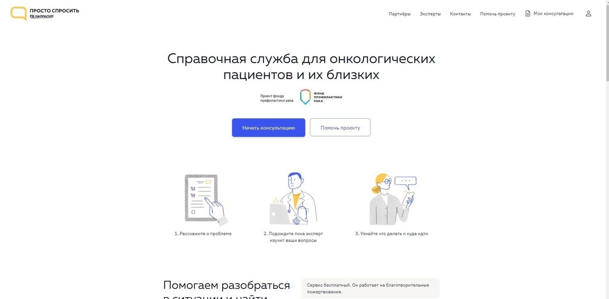
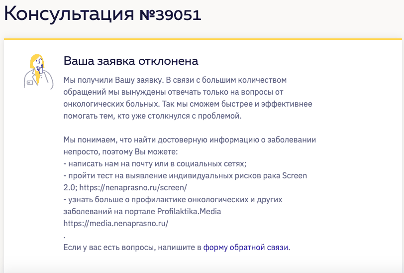

The situation
In 2019 I worked at a cancer prevention nonprofit in St Petersburg. It ran prevention and education: an online risk test used by hundreds of thousands of people, training for young oncologists, a health media site. It did not help individual patients.
Patients wrote in anyway, every day, about 1,500 a year, asking what to do after a diagnosis. We tried to help: whoever had a minute replied, me included. But nothing was formalised, every reply was improvised, and it rarely got the person much further. It also took a lot of the team's time.
The fork
We were already paying for this demand in staff time, and the help it bought was thin. A service would cost money, but it would turn that time into answers. It also raised the next question: who pays for each doctor's answer.
What shipped


A form that asks the question for the patient
This is the part I am proudest of. Before designing it I interviewed doctors and read patient forums. People rarely ask questions. They describe their situation and expect the doctor to work out what they need, and the usual reply to a story like that is sympathy, not an answer.
So the form does the asking. A few gate fields, then the topic, then a checklist of the questions doctors most often need to answer. Each request arrived as a ready case: no case manager had to rework it, and the doctor knew exactly what to answer.




Who pays
Not the patient. A price at the worst moment of someone's life would have made the foundation one more paid clinic. The bet was recognition: most people have seen cancer up close and know the helplessness of not knowing what to do. A donor looking at this service sees their own worst month. Capacity was whatever donors funded: money for 200 consultations meant 200 answers.

What happened
"The first 300 consultation opportunities paid off by donations were all snapped up in a couple of days."
Me, as head of the project · ITMO.News, 11 February 2019
A year later the service drew about 1,100 donations a month, around $5 each. Recurring giving and donor lifetime value grew with it, from zero.

Donations to Prosto Sprosit, a year after launch number of payments per month · January to May 2020
| 2020 | Donations | Total, $K | Average, $ |
|---|---|---|---|
| January | 1,222 | 5.9 | 4.82 |
| February | 1,142 | 5.4 | 4.69 |
| March | 1,170 | 6.1 | 5.24 |
| April | 1,073 | 5.2 | 4.86 |
| May | 1,036 | 4.9 | 4.76 |
| Total | 5,643 | 27.5 | 4.87 |
The 2019 reports show one income figure for the whole foundation, so the first year and the recurring growth are my account, not a published number. For January to May 2020 the reports do split it out: $27.5K in donations to the service against $22.0K in running costs. In March 2020 the same team built a COVID-19 helpline in a week and a half, on live chats rather than this form: the next case.
What we changed after launch
The first version told patients two things: "request received" and "answer ready", with a promise of about three days. Doctors worked part time and some cases came with hundreds of pages of records, so the promise was not always kept, and patient satisfaction sat around 7–8 out of 10.
I first tried to make doctors faster: a case manager, redistributing cases. It barely moved. Then I changed what the patient was told instead: which doctor had taken the case, a notice when it was running late, what to expect and when. Response time stayed roughly the same; satisfaction rose to about 9.5 out of 10. Those answers also fed the patient stories the foundation used in its fundraising.
What it cost
Building and developing the site cost about $40K over 2019, and every answer was a doctor's fee. In the first week we made the form stricter: prevention questions were reaching paid doctors and producing the least useful answers. Requests from people without a diagnosis were declined, with a pointer to the risk test and the media site.

What I would do differently
Tag every donation by project and recurring status from day one. Recurring giving grew on the back of this service, but the 2019 reports show one total for the whole foundation, so I cannot put a number on the strongest part of this story.
Sources
- ITMO.News, 11 February 2019: launch, about 1,500 questions a year before it, the first 300 consultations, 30 requests a day, "200 consultations for 200 people".
- Prosto Sprosit, service page RU: the service's own counter of closed requests, past 20,000 by October 2026.
- Monthly financial reports of the foundation (nenaprasno.ru/reports): project costs, February to December 2019; donations by project, January to May 2020.
- RBC Trends, 2 April 2020 RU: the COVID-19 version, built in a week and a half; first days' volume.
- Nuzhna Pomosh, foundation column RU: about 2,000 COVID-19 requests by January 2021.
All money on this page is in US dollars, converted from roubles at fixed rates: 61.8 ₽ per dollar for 2020 (Bank of Russia average for January 2020) and 64.7 ₽ for the 2019 development cost (2019 average).